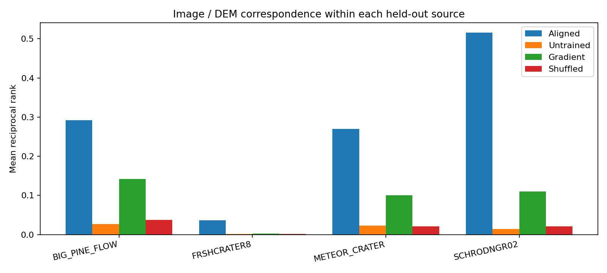

Image / DEM correspondence
Research experiment only. This measures recovery of the same geographic window from another modality. It does not measure Earth–Mars analog relevance, rock type, minerals, or mission suitability. No model from this experiment replaces production ranking.
Frozen experiment
15 source sites grouped by geographic envelopes with a 100 km gap. Amboy and Cima stay together. Train 8,774 windows; validation 2,346; test 5,594 across four sites; Jezero 225 windows as a single Mars-domain probe. All sites were previously used in this project; these are new experimental splits, not previously untouched external data.
Two separate encoders learn symmetric within-site InfoNCE on aligned image / DEM windows, with paired rotations/reflections. 15 fixed epochs; checkpoint selection uses only equal-site, equal-direction validation MRR, including the untrained checkpoint. A shuffled-pair run uses the same settings. Full-gallery evaluation stays within each source to prevent identifying source alone from solving the task. Tied similarities use mid-ranks.
Aligned checkpoint epoch 15; shuffled epoch 14. Macro MRR: aligned 0.2785, untrained 0.0166, gradient descriptor 0.0891, shuffled 0.0202.

| Source | Gallery | Image→DEM Top1 | DEM→Image Top1 | Mean MRR |
|---|---|---|---|---|
| METEOR_CRATER | 225 | 0.182 | 0.191 | 0.2696 |
| BIG_PINE_FLOW | 225 | 0.209 | 0.191 | 0.2922 |
| SCHRODNGR02 | 414 | 0.370 | 0.435 | 0.5156 |
| FRSHCRATER8 | 4730 | 0.026 | 0.014 | 0.0364 |
Limits and missing inputs
There are only four test sources and two validation sources. Site bootstrap intervals are recorded in summary.json, but cannot establish global generalization. Jezero probe MRR 0.2484; one Mars source cannot establish Mars transfer. All-zero missing-image MRR 0.0119; missing-DEM MRR 0.0120. These are stress tests, not calibrated rejection thresholds.
The first attempt stopped before its first optimizer update because deterministic CUDA adaptive-pooling backward was unavailable. The archived failure contains no test evaluation. Fixed 2×2 average pooling on the fixed 4×4 feature grid replaced the mathematically equivalent adaptive operation; deterministic training remained enabled.
Reproduction
Protocol SHA-256 1a50c1710b417535042fd55f506b1e7258efb045e43be6198cb3e2e6b1c5ee11. All training and evaluation ran on server 192.168.31.145 using RTX3090. Data and checkpoint hashes are retained in the protocol and reports.
Frozen protocol · Comparisons and intervals · Aligned report · Shuffled report
AI assistance was used for implementation and reporting. No new human ratings or material labels were created. No NASA endorsement or deployment claim.